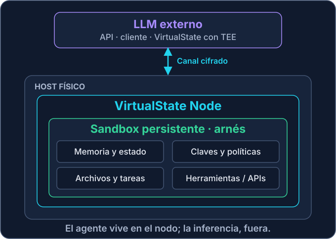
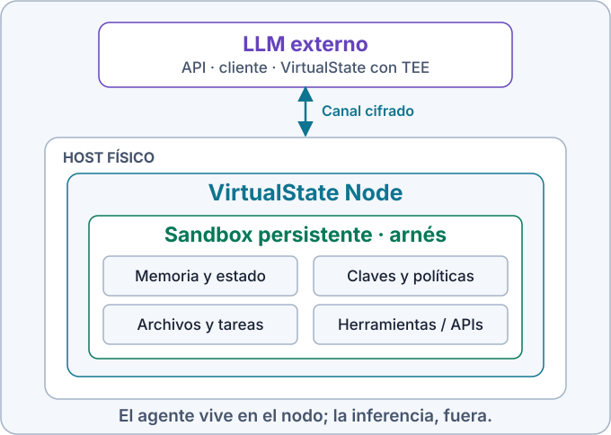
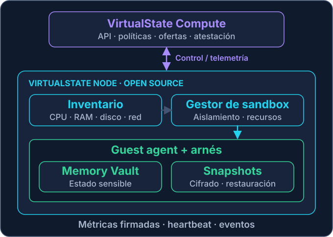
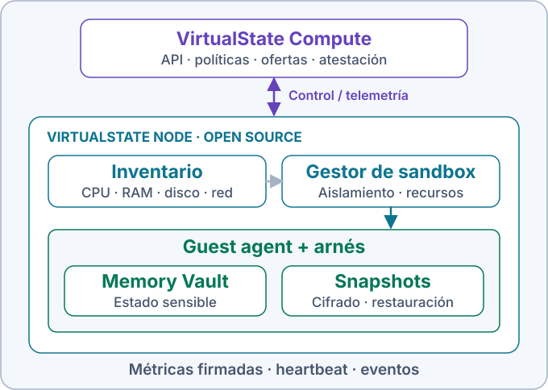
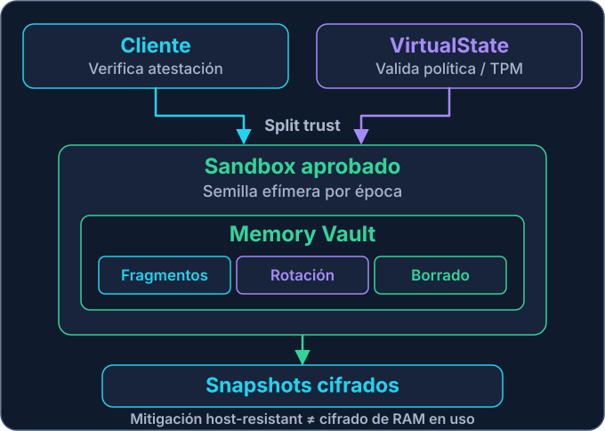
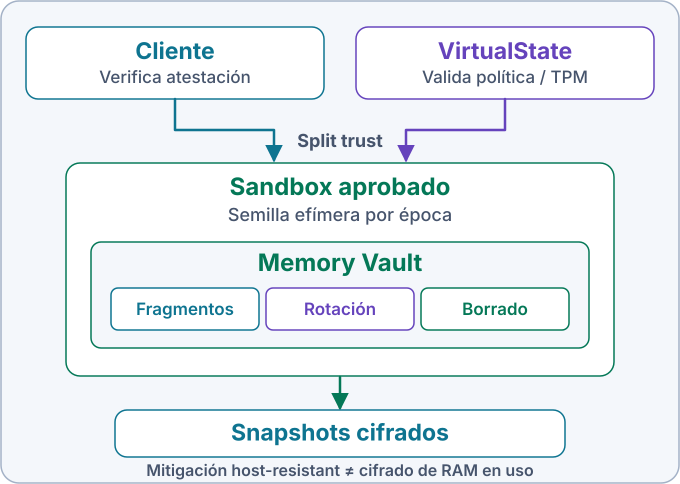
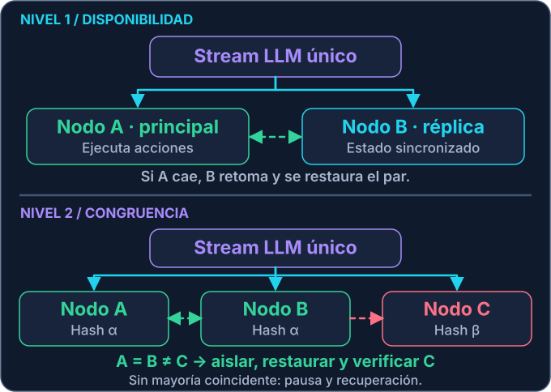
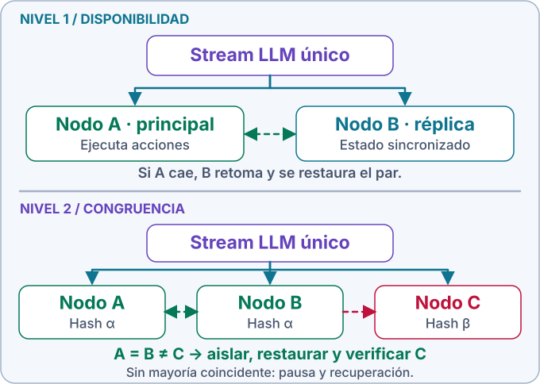
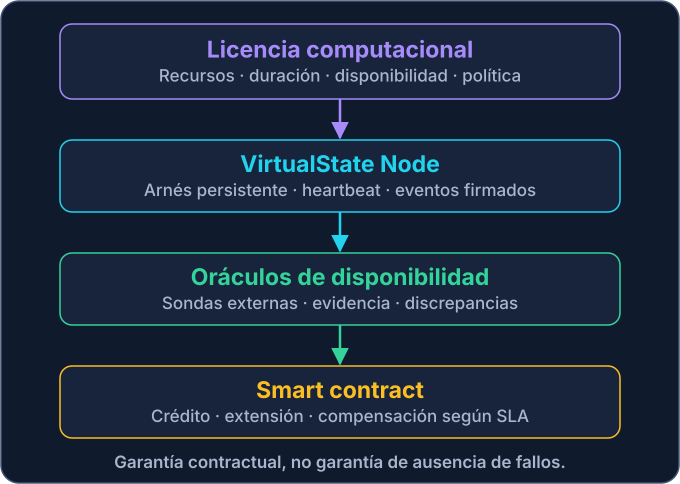
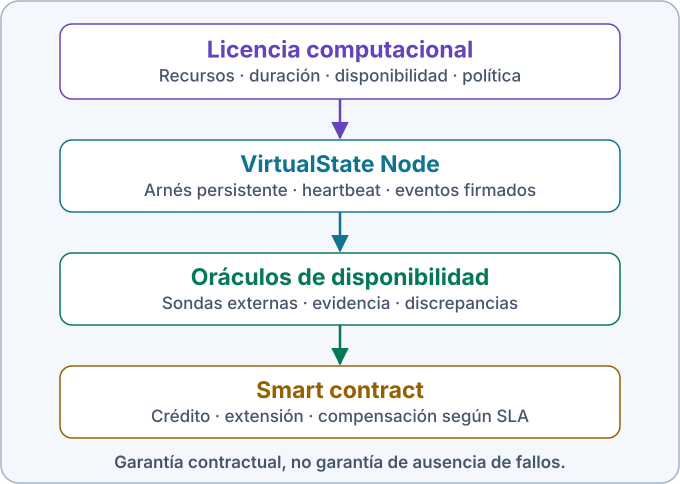

CEEI · OAP IMPULSA 2026 Arquitectura de alto nivel
01 / Arquitectura
Un lugar donde los agentes puedan operar.
VirtualState propone convertir servidores heterogéneos en entornos de ejecución persistentes, privados por capas y verificables para IA agéntica.


Esquema conceptual · Arquitectura
No alojamos el modelo en el nodo
El nodo aloja el arnés: memoria, contexto, tareas, herramientas, credenciales y conectores. La inferencia se realiza fuera, mediante un canal autenticado y cifrado.
Independencia del proveedor
El LLM puede estar en una API de terceros, en infraestructura del cliente o en servidores propios con confidencialidad por hardware y modelos de pesos abiertos.
VirtualState
CEEI · OAP IMPULSA 2026 Arquitectura de alto nivel
02 / VirtualState Node
Del hardware a un entorno persistente.
Un runtime ligero de virtualización especializado en agentes, diseñado para minimizar la sobrecarga de recursos sin renunciar al aislamiento.


Esquema conceptual · VirtualState Node
01 · Publicar capacidad
El proveedor registra los recursos disponibles y su perfil de confianza. VirtualState Compute coordina la asignación mediante licencias de uso.
02 · Ejecutar y preservar
El nodo crea un sandbox Linux aislado; el guest agent gestiona el estado, los snapshots cifrados y su restauración. El objetivo es reutilizar mecanismos de virtualización existentes en el MVP.
03 · Medir
Heartbeats y eventos firmados informan de la disponibilidad y el estado operativo, sin exponer el contenido del agente.
VirtualState
CEEI · OAP IMPULSA 2026 Arquitectura de alto nivel
03 / Privacidad
Proteger lo sensible, no prometer lo imposible.
Una defensa por capas para reducir la exposición del estado de un agente ante el operador del host.


Esquema conceptual · Privacidad
Aislamiento y cifrado
Tráfico autenticado y cifrado; almacenamiento y snapshots cifrados. El Memory Vault aplica fragmentación, ofuscación dinámica y rotación de material efímero a regiones sensibles.
Confianza medible
Atestación remota y TPM 2.0 en niveles verificados; el cliente y la plataforma aportan material de sesión conforme a la política (split trust).
Límite explícito
La resistencia al host es una mitigación, no cifrado completo de RAM en uso. Un host malicioso activo sigue siendo un riesgo; los TEE de hardware representan un nivel superior.
VirtualState
CEEI · OAP IMPULSA 2026 Arquitectura de alto nivel
04 / Continuidad e integridad
Redundancia adaptada al riesgo.
El mismo stream del LLM alimenta arneses sincronizados en hosts físicos distintos, preferentemente con operadores y dominios de fallo independientes.


Esquema conceptual · Continuidad e integridad
Nivel 1 · Dos nodos
Un principal y una réplica mantienen checkpoints y resultados de herramientas sincronizados. Si uno falla, el superviviente retoma el último estado confirmado y se restaura la redundancia. Si se comparan hashes y discrepan, se pausa y se reproduce la iteración desde el último checkpoint acordado. Un par no identifica al correcto por mayoría.
Nivel 2 · Tres nodos
Tras cada iteración se comparan los hashes SHA-256 del contexto lógico canónico y del stream ordenado. Dos coincidencias permiten aislar, reconstruir y verificar la réplica divergente; si falta un nodo se incorpora otro. Sin mayoría, se pausa.
Un único ejecutor de acciones
Pagos, correos y llamadas con efectos externos se delegan a un principal. Antes de transferir el rol se verifica el registro y el resultado externo. Fencing e idempotencia reducen duplicaciones; ante un resultado incierto, no se reejecuta a ciegas.
VirtualState
CEEI · OAP IMPULSA 2026 Arquitectura de alto nivel
05 / Garantías y colaboración
De la disponibilidad medida a la garantía programable.
La capa comercial conecta la ejecución del nodo con derechos de uso y condiciones de servicio explícitas.


Esquema conceptual · Garantías y colaboración
Licencias computacionales
Derechos de uso sobre recursos definidos; duración, nivel de confianza, umbrales de disponibilidad y remedios contractuales.
Oráculos y contratos
Medición externa y evidencias firmadas alimentan la liquidación automatizable. Si hay discrepancias, el contrato puede suspender la liquidación. La blockchain no proporciona confidencialidad.
Qué queremos validar con un socio
Codesarrollar una prueba de concepto de aislamiento ligero, replicación, detección de divergencias y recuperación medible. Medir la sobrecarga de memoria, latencia y tiempo de recuperación.